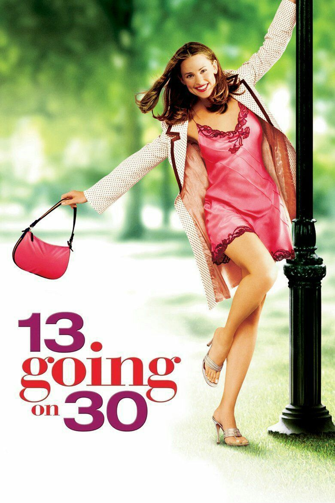
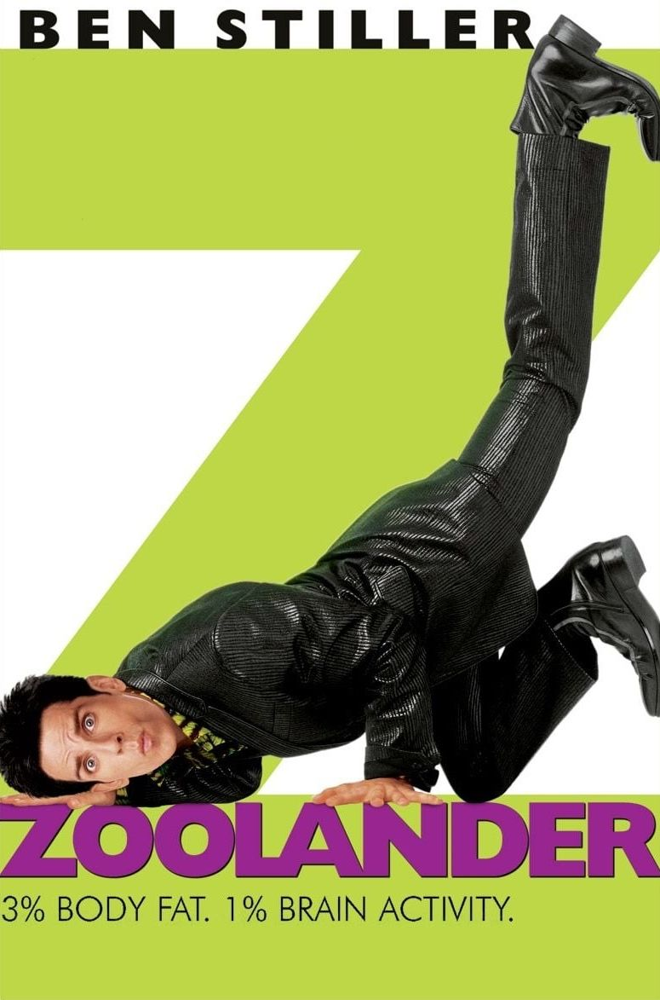

Most notable mentions. Contains movie genre of: comedy, romance, fantasy, slice of life, fantasy, drama

❤︎ Current beloved is...
Donald Kimball from American Psycho (2000) ★ Love his expressions and mysterious side, he only have three scenes but really memorable
Movies



Planned



Anime